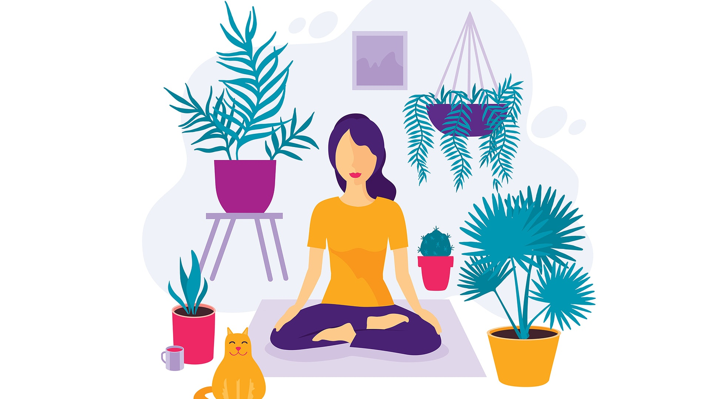

Coping Statements
Coping statements are a great way to help reduce stress and anxiety. When you are in a relaxed state-or as relaxed as you can be- come up with comforting and motivational statements for yourself. I recommend coming up with your own statements rather than looking up ones online because you know yourself best and what is most comforting to you. Then, when you are stressed or feeling anxious, write down your statements or repeat them to yourself. I used to experience frequent panic attacks and I was really afraid of them becoming a permanent part of my life. Thus, I came up with the follwing coping statements to use when I have panic attacks:"It is okay that I am feeling this way right now because this is temporary. This is temporary because I will do whatever it takes to make sure my life does not continue like this. I will never give up on myself" Reminding myself of my determination to get better helped me handle difficult moments.
{kind=link}
Counterstatements For Negative Thoughts
This is an exercise I learned in therapy. When you experience a negative thought, write it down. Then, counter it. For example, let's say you have been feeling unintelligent because you have been performing poorly in a certain class. On a piece of paper, write down the negative thought in one color, in this case that would be, "I am unintelligent" Underneath it, write a counterstatement. A counterstatement for our example would be "Just because I am doing poorly in one class, doesn't mean I am unintelligent. I am performing well in other classes." Oftentimes, you will realize your negative thoughts are unreasonable and there is a lot of evidence against them.
{kind=link}
EFT Tapping
 EFT stands for Emotional Freedom Technique. EFT tapping is a form of alternative treatment that relieves anxiety and stress. It involves tapping different parts of your body to restore energy balance; it's also known as psychological acupressure. I know it sounds crazy, but I have tried it and I actually did feel more relaxed after tapping. A lot of clinical studies focused on EFT Tapping have showed promising results. I definitely recommend giving it a try. I am attaching an article and a video that explain how to do it. It's a simple exercise you can easily do at home.
EFT stands for Emotional Freedom Technique. EFT tapping is a form of alternative treatment that relieves anxiety and stress. It involves tapping different parts of your body to restore energy balance; it's also known as psychological acupressure. I know it sounds crazy, but I have tried it and I actually did feel more relaxed after tapping. A lot of clinical studies focused on EFT Tapping have showed promising results. I definitely recommend giving it a try. I am attaching an article and a video that explain how to do it. It's a simple exercise you can easily do at home.
Article That Explains the Process
Here's a Video if you Don't Like Reading(start watching at 25 minutes)
Meditation
 Meditation is practiced globally and known to help people with with anxiety, stress, chronic pain, and more. A lot of the apps I mentioned in the Apps tab are meditation apps. I am currently using headspace and I definitely think it is helping me. I think meditation is great for people who are seeking a higher sense of self-control and want to focus on the present.
Here is an Article Explaining Meditation
{kind=link}
Yoga
I know you have probably heard about yoga being good for stress relief many times, but it's the truth. Yoga is good for your mental and physical health. It not only helps fight stiffness but also puts you in a calmer state. Make sure you are doing it carefully and correctly though, so you don't pull anything. I recommend attending classes so an instructor can watch your technique, but if you don't have access to one, I recommned watching YogaTX's videos on YouTube.
YogaTX Beginners Yoga For Stress Relief
{kind=link}